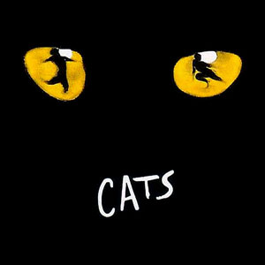

About the musical
Cats is a musical composed by Andrew Lloyd Webber, based on Old Possum's Book of Practical Cats (1939) by T.S. Eliot. Since its premiere in 1981 on London's West End, it has become one of the most successful and longest-running musicals in theater history, known for its distinctive storytelling, dance-focused performances, and memorable score.
The musical is set during the Jellicle Ball, an annual gathering of the Jellicle Cats, where their leader, Old Deuteronomy, selects one cat to ascend to the Heaviside Layer and be reborn into a new life. The story is presented through a series of songs, each introducing a different cat and their unique personality. Some of the key characters include:
- Munkustrap - The responsible and protective narrator of the story.
- Grizabella - A once-glamorous cat who is now an outcast, best known for singing Memory.
- Rum Tum Tugger - A rebellious and charismatic cat who enjoys being the center of attention.
- Macavity - A villainous and elusive criminal mastermind.
- Mr. Mistoffelees - A magically gifted cat known for his impressive abilities.
Cats is notable for its innovative use of dance and movement, with Gillian Lynne's choreography that blends ballet, contemporary, and jazz styles. The show is almost entirely sung-through, meaning there is little spoken dialogue. Its most famous song, "Memory", has been widely covered and remains a staple of musical theater.
The original West End production ran for 21 years, while the Broadway production lasted 18 years, making it one of the longest-running shows in both regions. The musical has been translated into more than 20 languages and performed worldwide. It has also been adapted into various recordings and a 2019 film version.
While Cats has received both praise and criticism for its unconventional structure and surreal premise, it remains an influential work in the history of musical theater. Its impact can be seen in the continued popularity of dance-driven musicals and the lasting recognition of its music and characters.
